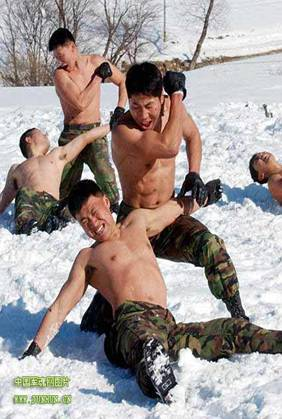
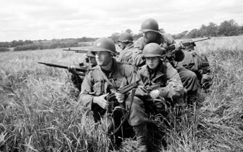

全军心理咨询师培训
第一章军人心理健康
- 重点
军人心理素质
军人心理素质训练
- 难点
特殊作业环境对军人心理健康的影响 （单选题70题、多选题30题 ）
- 章节介绍
第一节军人心理健康概述★
第二节特殊作业环境对军人心理健康的影响★
第三节军人心理健康教育内容★
第四节军人心理健康教育的组织实施
01:45
第一节 军人心理健康概述
一、军人心理健康的概念
军人心理健康，是指军人在高级神经功能和智力正常的情况下，在自身和军事环境条件许可的范围内所能达到的心理最佳功能状态。
03:45
军人心理素质是以生理素质为基础，人格为核心，通过个体与军事社会环境相互作用而形成的适应履行任务使命的相对稳定的、综合的、全面的心理品质，它包含聪慧、忠诚、勇敢、自信和耐挫五个维度，具体化为15个因素。
聪慧是军人认知品质的特征，是军人在认知活动中表现出来的，直接影响军人认知活动的机制和水平，是军人心理素质的结构中最基本的成分，包括判断、决策和应变三个因素。
忠诚主要体现的是军人的核心价值观，是个性中的个性倾向性品质特征，是军人心理素质结构的动力系统，包括爱国、奉献、责任三个因素。
勇敢是军人情绪意志品质特征，也是军人最突出的一项心理品质，在军人心理素质中居于核心地位，包括果断、坚定、顽强三个因素。
自信是军人心理素质的一项重要品质，直接制约着军人心理品质的培养和心理动力的激发，影响其它心理品质的表现，包括沉着、独立、乐群三个因素。
耐挫是挫折耐受力的简称，是心理素质在行为品质上的特征，是军人心理素质的功能体现，也是衡量心理素质水平高低的标志，包括心理适应、心理承受、心理调节三个因素。
16:29
二、军人心理健康的标准
- 智力正常
- 善于协调和控制情绪
- 具有较强的意志品质
- 人际关系和谐
- 适应并改善现实环境
- 保持人格的完整和健康
- 心理行为符合年龄特征
18:55
《中国人民解放军军人心理健康教育教材》把军人心理健康标准概括为以下几条：
1.智力中等或中等以上,能保持高绩效（效率）的工作状态；
2.适应军事生活，对军事事件有良好的应变能力；
3.人格健全、积极向上、精力充沛，心胸开阔，热爱军事集体；
4.有正确的人生观和价值观，乐于奉献；
5.意志坚定、毅力持久、行为果敢（断）、有较好的自制自控能力；
6.情绪稳定、乐观开朗、具有一定的抗应激能力；
7.充分了解自己、有自尊心、奋斗目标切合部队实际；
8.乐于交往、善于合作、能够保持和发展融洽的战友情谊；
9.善于学习，军事技能形成得（很）快。
22:15
三、军人心理健康的特点
（一）我国军人总体心理健康的特点
心理健康水平低于国内常模
心理问题具有多样性
即焦虑、抑郁、强迫、人际关系敏感
心理问题具有层次性
即一般心理问题较多严重心理问题次之神经症性心理问题较少
32:00
（二）不同兵种军人心理健康的特点
陆军：焦虑、人际关系敏感为主要表现
海军：抑郁倾向较多
空军：强迫倾向较多
武警：焦虑较多、人际关系敏感
军校学员：主要表现为焦虑
科技人员：抑郁、强迫相对较多
35:06
（三）特殊环境条件下军人心理健康的特点
- 特殊自然环境条件下军人的心理健康
特殊自然环境多指气候环境恶劣，生活条件艰苦，交通及通信不便等地区，主要有高海拔、寒冷、炎热、偏僻等特点。这种自然环境造成高原军人人际交往局限、性别单一，机体长期处于生理和心理上的应激状态，躯体化、强迫、抑郁等心理症状较突出。

37:48
- 特殊作业环境条件下军人的心理健康
特殊作业环境下军人心理健康状况显著低于地方常模和军人常模，主要表现有强迫、躯体化、人际关系、敌对、偏执等心理症状。
38:37
（四）军事应激条件下军人心理健康的特点
军事应激是在特殊的军事活动环境中产生的一种特殊的情绪状态，是军队指战员通过对军事活动环境、平时训练演习和实战等刺激的认知评价，而产生的生理及心理的反应。
应激条件下军人心理健康水平非常显著地低于一般人群和平时军人。主要心理症状为：强迫、躯体化、人际关系敏感、抑郁和焦虑。

40:53